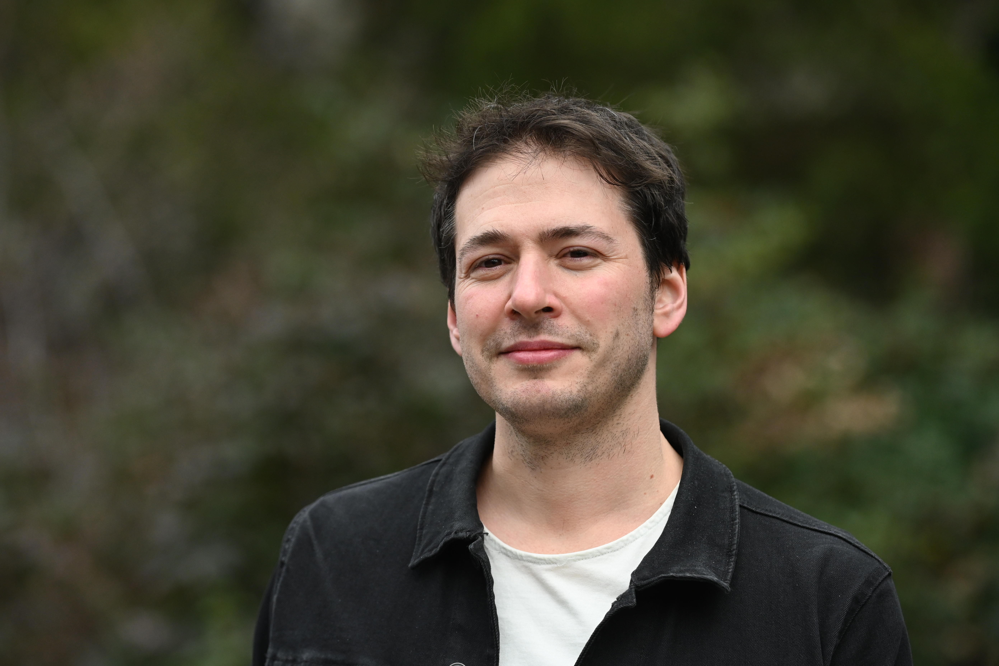

Welcome
I am a researcher in cognitive science. My work focuses on eye movements, visual learning and computational models. I am also interested in data science methods in cognitive science, especially in time-series analysis and Bayesian methods. Therefore, I have been involved in various research projects from cognitive art history, to environmental psycholgy and birdsong evolution.
I am currently affiliated with the Budapest University of Technology and Economics, and have a lot of research links to the University of Vienna.
Short Bio
2026– Assistant Professor, Department of Cognitive Science, Budapest University of Technology and Economics, Hungary
2019-2026 Senior Scientist, Vienna Cognitive Science Hub, University of Vienna, Austria
2012–2018 PhD student, Vision Lab, Deparment of Cognitive Science, Central European University, Hungary/Austria
2014–2015 Visiting Research Fellow, Visual Cognition Lab, University of Fribourg, Switzerland
2010-2012 Cognitive Science MSc, Budapest University of Technology and Economics, Hungary
2006-2010 Biology BSc, Eötvös University Budapest, Hungary
Research
- Currently, I use computer vision models and gamified human experiments to study the visual learning dynamics in complex visual environemnts. I am interested the extent to which low level perceptual representation learned by human experts resemble to computer vision models.
- Eye movements in learning: My PhD focused on how visual statistical learning influences eye movements in a gaze contingent paradigm (Arato,Rothkopf & Fiser, 2024). We found that while implicit learning can proceed even without any effect on eye movements, after sufficient learning and or using explicit instruction a tight link emerges between eye movements and performance on a recognition test.
- Time series modelling: I use hidden Markov models to study human gaze dyanmics in free viewing and to quantify scanpath similarity. I also use HMM-s to study dynamic functional connectivity using large scale fMRI datasets of neurodivergence.
- Birdsong phylogenetics: I study cross species bird vocalization datasets to study the extent to which evolutionary history can explain their similarity. (Arato & Fitch, 2021)
Students (co)supervised
PhD Students
Master Students
- Jannis Bressgott, Dynamic functional connectivity of the reward network in autism: a model comparison
- Nikita Podolin-Danner, Beyond mere presence: The role of social evaluation in working memory perfor-mance
- Anja Stojkovic, Understanding Viewer Engagement with Art: A Study of Visual Attention Using Eye Tracking and Machine Learning
- Nicoló Filipucci, Eye-Movement Similarity: Scanpath Analysis for Recognizing Learning Disorders.
Teaching
- Brain, Mind and AI, Budapest University of Technology, Spring 2026
- BioDataScience in Python and R, Uni Wien Cognitive Biology Master, Fall 2023,2024,2025
- Bayesian Modeling in Python- TEWA 2- Uni Wien Psyhology Master, Spring 2023
- Scientific Computing in Python- TEWA 1- Uni Wien Psyhology Master, Spring 2021, Fall 2022, Spring 2024, Spring 2025
- Cognitive Modelling-Advanced Seminar- Uni Wien Psyhology Master, Fall 2020
- Artificial Intelligence, Milestone Institute, 2018
- Cognitive Psychology, Milestone Institute, 2017
- Cognitive Informatics in Human Vision- Cognitive Science MSc, Eotvos University Budapest, Fall 2017